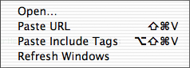
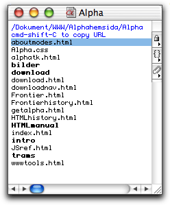
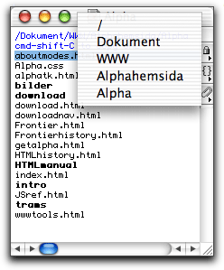

 Home page windows are windows with lists of files much in the same way as Finder windows. The title of the window is the name of the folder. The first line in the window is the complete path to the folder. In the list of files the folders are shown in boldface.
The home page windows serve two purposes. They let you easily copy and paste to create HTML links and they let you open files without leaving Alpha or opening a file dialog.
 You can navigate in the windows with the up and down arrows. You can also make quick jumps in the windows by relatively quickly type the first few letters of a file name. The selection then jumps to that file, just like in the Finder.
| Key combinations with special functions in the home page windows | |
| cmd-shift-C | Copies the path of the file at the current line. The line doesn't have to be selected. Alpha grabs the file anyway. This copying does not use the clipboard. The file can then pasted into an HTML document as a link using Paste URL or as an include file using Paste Include Tags. |
| return | Return on a text file opens the file in Alpha. Return on a folder opens a new home page window or brings it to front if it is already open. Return on a non-text file opens the file in the application it was created in. Return on an application launches the application. If you like you can disable the feature that Alpha opens non-text files and launches applications in the general preferences dialog. Uncheck Return on non-text file in home page window opens file. |
| cmd-downarrow | The same as return. |
| cmd-double-click | Works like return. |
| option-return | The same functionality as return and in addition closes the home page window. |
| cmd-option-downarrow | The same as option-return. |
| cmd-return | Opens the parent folder of the window, or brings it to the front if it's already open. |
| cmd-uparrow | The same as cmd-return. |
| cmd-option-return | The same as cmd-return and in addition closes the home page window. |
| cmd-option-uparrow | The same as cmd-option-return. |
| cmd-R | Refreshes the window, i.e. it removes or adds lines if you have removed or added any files in the folder. |
| option-click in titlebar | Displays a popup menu where you can select
a parent folder to opens as a home page window, see the picture
below. If you hold down
the option key when you select a folder in this menu the current
window is closed before the new one is opened.
 |
Now to the menu items: